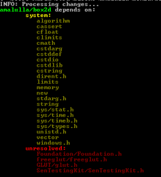

Once you upload to biicod e a library, everyone can reuse it! That’s why we explained how to upload to biicode any library just following a few steps, but that example didn’t cover the possibility of a library depending on other libraries, which is quite usual nowadays. So today, we’re going to see with an example how to proceed when your library depends on others. For this matter, we’re using BOX2D, an open source C++ engine to simulate rigid bodies in 2D, it is also used in different video-games like AngryBirds motor engine.
e a library, everyone can reuse it! That’s why we explained how to upload to biicode any library just following a few steps, but that example didn’t cover the possibility of a library depending on other libraries, which is quite usual nowadays. So today, we’re going to see with an example how to proceed when your library depends on others. For this matter, we’re using BOX2D, an open source C++ engine to simulate rigid bodies in 2D, it is also used in different video-games like AngryBirds motor engine.
UPDATE: Box2D v 2.3.1 has been uploaded to biicode on erincatto/box2d: 10 version.
Instead of using the glfw library inside, it uses the glfw library available in biicode.
The adaptation required can be seen here, in the diff on github.
It requires:
- Simple modification of root CMakeLists.txt. Note that with this simplification no other CMakeLists.txt in the project is required, biicode does not use them.
- Changing a couple of #includes. This will also be protected with #ifdef(BIICODE) guards in order to guarantee proper compilation of the fork without biicode too.
- The DroidSans.ttf is handled as biicode dependency, so it is always retrieved and copied to “bin” folder to guarantee proper functioning. This will also be protected with #ifdef guards.
- Adding glfw dependency in requirements.bii, filtering out glfw in ignore.bii, filtering out stb_truetype.h as having a main in mains.bii, and adding the root folder in paths.bii (so biicode finds #includes starting with “Box2D”)
ENJOY!
PREVIOUS VERSION:
As you can guess, once we’re done everybody will be able to use this library just by typing:
1 | #include "erincatto/box2d/Box2D/Box2D.h" |
The Initial Steps to upload to biicode: one, two, three, four!
These don’t defer from the ones used on the previous example by Laso last week.
1. Install biicode in your computer.
2. Fork original repository (OPTIONAL)
If the library is available on Github or another public git repository, it’s a good practice to fork the repository so in case the author updates we can merge them to our “biicode compatible” library easily. For this step, go to the original repository and click on fork:
3. Init a new biicode project and create a new block
Easy-peasy, just like this:
1 2 3 | $ bii init bx $ cd bx $ bii new amalulla/box2d |
If you already are a biicode user you can replace “amalulla” with your username so you can publish your code when you finish this tutorial.
Now copy the source code into blocks/amalulla/box2d folder or execute git clone into it (if you forked the original repository):
1 2 | $ cd blocks\amalulla\box2d $ git clone https://github.com/MariadeAnton/box2d.git . |
4. Find your external dependencies
Inside Box2D library it’s included a copy of freeglut and other of glui, but we don’t need them, because freeglut has been already uploaded to biicode.
So we’re going to:
- ignore the freeglut and glui copies inside the original box2d library
- reuse from the ones uploaded in biicode.
4.1 Create a ignore.bii file into blocks/username/box2d/ignore.bii and write into it: freeglut/* and glui/* , so biicode ignores the whole of both folders.
4.1.1. Add the includes to your base directory
First of all, check the ones needed by executing bii deps, you’ll see a long list about the system, resolved and unresolved libraries.
1 | $ bii deps |
{kind=link}
It seems it cannot find, among others, Box2D internal includes, it has tons of files whose route looks like this: Box2D/Collision/Shapes/b2Shape.h or Box2D/Dynamics/Joints/b2MouseJoint.h, so we have to specify the project to include the library’s base directory.
Create a paths.bii file and just write ” / ” into it, this way biicode knows it has to include the library’s root directory to search the files needed into it:
Save and check your dependencies again:
1 | $ bii deps |

This looks way better now, let’s see what it isn’t finding two of them are included on the build folder for xcode iOS, we’re going to move towards the other dependencies, there’s one to Freeglut and Glut, so we’re going to check how to solve them.
4.2. #include External Libraries
Once you know the libraries needed, look for them in biicode:
- freeglut.h → freeglut → http://www.biicode.com/glui/glutwrapper
- glui.h → glui→ http://www.biicode.com/glui/glui
How do we know the required include?
Just get into the URL of the required file, like this:
Search in the old #include routes and substitute them for the new ones (I use sublime text editor to achieve this), as you can see, the new includes match exactly the new route where I found them:
- freeglut.h →
#include “freeglut/freeglut.h”→#include “sbaker/freeglut/freeglut/freeglut/include/GL/freeglut.h”
- glui.h →
#include “glui/glui.h”→#include “glui/glui/GL/glui.h”
Ok, we’ve updated exactly four #include routes, so lets execute bii find command to retrieve the dependencies:#include <glui/glutwrapper/glut.h>
1 | $ bii find # to retrieve the dependencies |
And you should see on the terminal a message like this:
5. Edit your CMakeLists.txt
Now a small tip on how to have a CMakeLists.txt working as it used to and also with biicode. Just write IF (BIICODE) usual biicode instructions/ ELSE() the ones box2d had before: so update the CMakeLists.txt you had before with this:
1 2 3 4 5 6 7 8 9 10 11 12 13 14 15 16 17 18 19 | IF(BIICODE) include(${CMAKE_HOME_DIRECTORY}/biicode.cmake) # Initializes block variables INIT_BIICODE_BLOCK() # Include base block dir ADD_BIICODE_TARGETS() TARGET_INCLUDE_DIRECTORIES(${BII_LIB_TARGET} PUBLIC ${CMAKE_CURRENT_SOURCE_DIR}) IF (UNIX) IF(EXISTS "${CMAKE_CURRENT_SOURCE_DIR}/Testbed") add_definitions( -D__unix__ -DHAVE_FCNTL_H -DHAVE_GETTIMEOFDAY ) TARGET_LINK_LIBRARIES(${BII_LIB_TARGET} PUBLIC pthread X11) find_package(OpenGL REQUIRED) ENDIF() ENDIF() ELSE() # Previous CMakeLists.txt goes here ENDIF() |
This CMake is the usual one with biicode and it includes this line TARGET_INCLUDE_DIRECTORIES(${BII_LIB_TARGET} PUBLIC ${CMAKE_CURRENT_SOURCE_DIR}) to take into account the root directory, it’s exactly the same thing we specified on our paths.bii file, we add that current source directory so Cmake is able to compile the project. Usually, each time you add something to your paths.bii file, you should add it too to your CMakeLists.txt .
Also a few lines have been written to define how to compile OpenGL with Unix OS.
6. Now build:
1 | $ bii cpp:build |
It builds a couple examples: username_box2d_HelloWorld_HelloWorld and username/box2d_Testbed_Framework_Main
Execute the examples! You’re ready to go!
If you execute the Testbed_Framework_Main you’ll see an image like this one:
Don’t forget to publish your library once you’re done! That way everybody can reuse easily from your library!
1 | $ bii publish |
Want to check if the library we’ve just uploaded is truly reusable? Try making your own example just like the one our interns made: Flappy Bii
Related Posts
Pingback: How to upload to biicode Little CMS | biicode Blog()
Pingback: How to upload to biicode Oscpack | biicode Blog()
Pingback: How to upload to biicode. Example 5: libuv - biicode Blog()